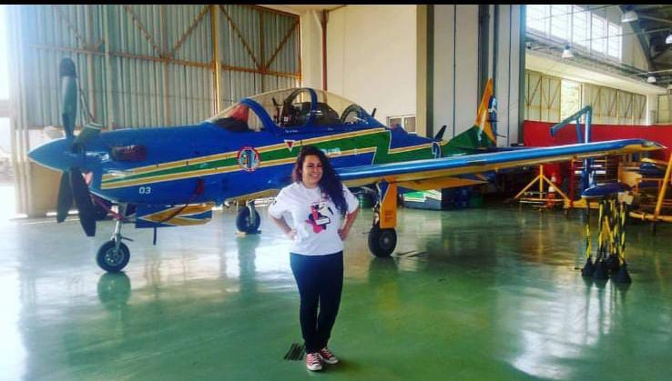
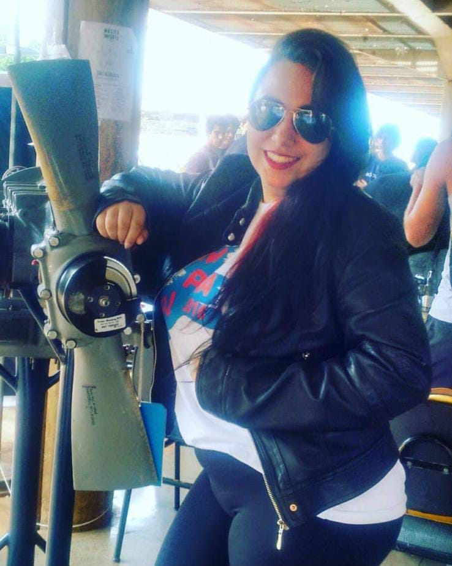
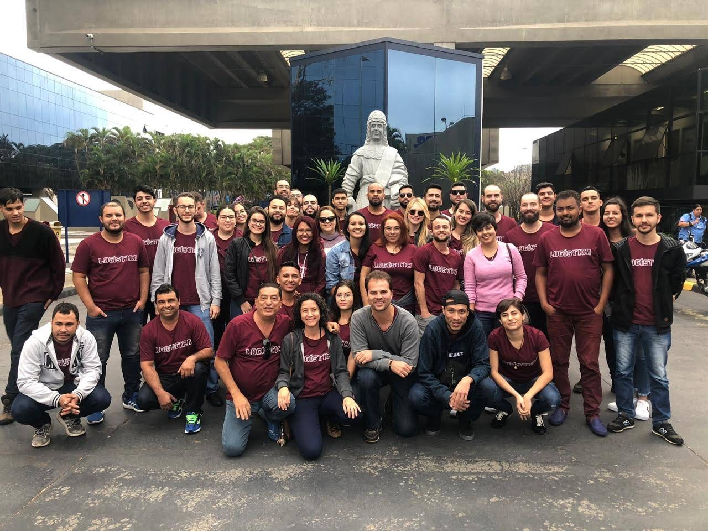

Engenharia Aeronautica - UFU (2015 a 2017)
1º Graduação - Interrompida
Cursei cinco periodos do curso e acabei optando pela interrupção pois não estava satisfeita com o curso, queria algo voltado mais para o operacional da aviação.

Logistica - IFTM (2018 a 2020)
2º Graduação - Concluído
Cursei cinco periodos do curso e finalizei em julho/2020.

Licenciatura em Computação - IFTM (2022 a 2026)
3º Graduação - Cursando
Cursando o primeiro periodo do curso.